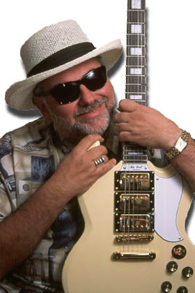
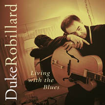

Статья и интервью Лизы Шаркен
(оригинал c
epiphone.com)

Мастер гитары Дюк Робиллард (Duke Robillard) стал одним из основателей легендарной группы Roomful Of Blues в 1967 году, в возрасте 19 лет. Группа существует и поныне, но Робиллард покинул ее в 79-ом, чтобы поработать с рокабилли певцом Робертом Гордоном (Robert Gordon), разделив гитарные обязанности с покойным Дэнни Гэттоном (Danny Gatton). Вскоре он присоединился к Legendary Blues Band (основанной бывшими участниками бэнда Мадди Уотерса) и записал с этой группой два альбома. В 81-ом Робиллард решил заняться своей сольной карьерой и собрал Duke Robillard Band, впоследствии переименованный в Duke Robillard & The Pleasure Kings. В 90-ом Робиллард занял место Джимми Вона (Jimmie Vaughan) в группе Fabulous Thunderbirds, продолжая работу в своем сольном проекте. Окончив выступления в составе T-Birds, он полностью сконцентрировал все усилия на сольной карьере.Помимо гитарного таланта, Робиллард обладает еще и талантом продюсера. Его работы с такими музыкантами, как Боб Дилан (Time Out Of Mind), Рут Браун (Ruth Brown), Джей МакШэннн (Jay McShann), Эдди Клиэруотер (Eddy "The Chief" Clearwater), Билли Бой Арнольд (Billy Boy Arnold), Джимми Уизерспун (Jimmy Witherspoon), Джэрри Портной (Jerry Portnoy), Джон Хаммонд (John Hammond), Роскоу Гордон (Roscoe Gordon) и Дэбби Дэйвис (Debbie Davies) были удостоены разнообразных наград. Кроме того, на многих дисках, которые продюсировал Робиллард, звучит его гитара.
Робиллард недавно закончил работу над альбомом Living with the Blues (Stony Plain Records) - первым полностью блюзовым альбомом со времени выхода в свет альбома Duke's Blues в 94-ом. Диск содержит несколько замечательных авторских композиций Робилларда, а также каверы песен таких сановников блюза, как Литтл Милтонс - "If Walls Could Talk," Фрэдди Кинг - "Use What You Got", Тампа Ред - "Hard Road", Вилли Диксон - "I Live The Life I Love," Би Би Кинг - "Long Gone Baby," Бобби Блэнд - "Good Time Charlie" и песню Брауни МакГи "Living With The Blues", подарившую название альбому.
За заслуги в гитарном деле Робиллард был выдвинут на премию W.C. Handy в номинации "Лучший блюзовый Гитарист Года". Он удостаивался этого звания дважды за последние два года. Как и у большинства блюзовых музыкантов, у Робилларда очень плотный график работы - более 200 концертов в год плюс продюсерская работа. Во время перерыва перед началом новых гастролей, Робиллард выбрал время, чтобы побеседовать с представителем Gibson.com и поделиться своим богатейшим музыкальным опытом. Робиллард описывает, как менялась его техника исполнения традиционного и современного блюза, рок-н-ролла, джаза, объясняет свой выбор инструментов для каждого из этих стилей. Кроме того, он поделился с нами закулисной информацией об альбоме Living With The Blues, о том, как записывались его песни.
Как изменялись стиль и техника вашей игры с годами?
Мой стиль претерпел массу изменений. Я начинал, слушая Чака Бэрри, его игра меня вдохновляла. Я с самого начала был под влиянием таких рок-н-ролльных гитаристов, как Чак Бэрри, Дуэйн Эдди (Duane Eddy), Линк Рэй (Link Wray) и других. С блюзом я познакомился по записям Чака Бэрри - на оборотных сторонах некоторых его ранних пластинок были медленные блюзы. Я стал интересоваться блюзом и его происхождением. Так я начал искать записи других музыкантов и обнаружил, что существует целый блюзовый мир. В начале своей карьеры я концентрировался на блюзовой гитаре, позднее пришел к ритм-энд-блюзу, свингу и джазу.
Я много лет провел в группе Roomful of Blues - группе, которую я создал, и в которой играл в течение 12-и лет. Играя в ней, я изучал различные блюзовые течения, Канзас Сити джаз, джаз 30-ых и 40-х годов, основанный на риффах. Моя техника и стиль игры как бы параллельно шли с процессом познания жизни, изучением игры мастеров разных стилей. Затем, в какой-то момент в период работы в Roomful Of Blues, я начал много сочинять, и спектр музыки, которую я играл, значительно расширился. Я стал включать в нее элементы раннего рок-н-ролла, того с чего я начинал.
В общем, я как бы сочетаю три основных стиля - блюз, джаз и ранний рок-н-ролл. Эти стили есть часть меня, из них складывается моя музыка. В последнее время я больше увлечен исполнением блюза и джаза.
Кто из исполнителей этих стилей оказал на вас наибольшее влияние в плане звука и техники игры?
Все мастера раннего блюза и джаза оказали большое влияние. Их очень много, но в первую очередь это Лонни Джонсон (Lonnie Johnson), Ти Боун Уокер (T-Bone Walker), Би Би Кинг и Фрэдди Кинг. Из джазовых гитаристов больше всего на меня повлияли Чарли Кристиан (Charlie Christian), Тайни Граймс (Tiny Grimes) и Оскар Мур (Oscar Moore). Я и сейчас обожаю этот ранний джазовый стиль. Однако и гитаристы, появившиеся позднее, такие как Кенни Баррелл (Kenny Burrell), Джордж Бэнсон (George Benson), Эрб Эллис (Herb Ellis) и Барни Кессел (Barney Kessel), тоже оказывают на меня влияние. Я имел удовольствие дважды записываться с Эрбом Эллисом. Одну из этих записей можно купить уже сейчас, а другая, наверное, выйдет в ближайшее время. Для меня играть с таким музыкантом, одним из настоящих мастеров, было чем-то вроде исполнения мечты всей жизни. Мы записали альбом, под названием Conversations In Swing Guitar, где играют Эрб, я и ритм-секция. Это было просто здорово.
Если говорить о роке, то самое большое впечатление на меня произвели первые рок-н-ролльные гитаристы. Когда моему старшему брату было 10, у него были записи Чака Бэрри, Джеймса Бертона (James Burton) и Рики Нельсона (Ricky Nelson), а позднее - Элвиса. Джеймс Бертон сильно впечатлил меня, я очень многое взял от его стиля, так же как и от Поля Бурлисона (Paul Burlison) и трио Джонни Бернетта, от Клиффа Гэллапа (Cliff Gallup) и Джина Винсента (Gene Vincent). К этому ряду я должен добавить еще Лэса Пола (Les Paul) и Чета Аткинса (Chet Atkins), также оказавших на меня влияние, особенно Лэса Пола, потому что не будь его - не было бы и рок-н-ролльной гитары.
Оказывают ли на вас влияние современные музыканты?
Я не испытываю влияния многих современных музыкантов. Однако в 80-ых, когда я играл рок-н-ролл больше, чем что-либо еще, я действительно слушал Джимми Вона (Jimmie Vaughan), которого я, в конечном счете, заменил в Fabulous Thunderbirds. Не скажу, что многие рок-гитаристы повлияли на меня, но мне нравятся гитаристы более блюзового толка, исполняющие ранний рок-н-ролл, такие как, например, Дэйв Эдмундс (Dave Edmunds).
Будучи обладателем премии W.C. Handy Award Лучший блюзовый гитарист Года (2000, 2001), вы сами считаетесь мастером гитары. Что чувствует музыкант, который оказывает влияние на целые поколения музыкантов?
Более всего интересно и, вместе с тем, как-то странно во всем этом то, что большинство музыкантов, которых я боготворил в молодости, и с кем мне довелось играть, большинство из них либо отошли в мир иной, либо более не выступают. Поэтому я как бы чувствую, что очень важно поддерживать жизнеспособность этого стиля, заниматься его развитием, поскольку приверженцев и последователей этого гитарного стиля, этого саунда просто не достает. Я не думаю, что он умрет, но нужны люди, способные его продолжать. Это замечательная музыка. Если ее играть как следует, она будет звучать так же замечательно и свежо, как и тогда, когда только появилась. Такие вещи просто так не умирают, разве что люди просто перестанут играть в этом стиле. Наверное, я в каком то смысле несу знамя более традиционных направлений блюза и джаза.
Как вы думаете, кто из нынешних музыкантов является самым ярким продолжателем этих традиционных стилей?
Есть очень много по-настоящему хороших молодых музыкантов, не смогу всех перечислить. Один из них - Monster Mike Welch, он играет с Sugar Ray and the Bluetones. Он начал играть совсем юным, сейчас ему всего 20 с небольшим. Он - феноменальный блюзовый гитарист. Есть много молодых гитаристов, кто на самом деле уделяет большое внимание корневым стилям.
Вы часто слушаете молодых музыкантов?
Мне нравится, когда
случается их послушать. Если тебе есть что
сказать, неважно, сколько тебе лет. Я
слушаю разных музыкантов, когда выступаю
на фестивалях. Но, в общем, я все еще под
влиянием тех же музыкантов, которые
впечатлили меня 25 лет назад, и я все еще
слушаю их. Иногда я слушаю и другую музыку
тоже, современные течения той музыки,
которую я играю, чтобы быть в курсе
происходящего. Но я всегда возвращаюсь к
старым мастерам, потому что это никогда не
уйдет. Эта музыка всегда звучит
великолепно. Я всегда возвращаюсь к своим
корням. Эта музыка существовала и до меня.
Я искренне верю, чтобы быть мастером в
своей области, неважно, художник ты или
музыкант, нужно знать, откуда все
появилось. Думаю, нужно идти дальше вглубь,
изучать то, что было намного раньше. Думаю,
что ты просто обкрадываешь себя, если не
пытаешься разузнать, откуда все пошло,
если не изучаешь, не слушаешь, чтобы
почувствовать всю глубину этой музыки. Я
считаю, что чем глубже ты копаешь,
тем глубже ты понимаешь эту музыку.
Какие музыканты больше всего вас впечатлили как композитора?
В контексте блюза я по-настоящему восхищаюсь такими музыкантами, как Биг Джо Тернер (Big Joe Turner) и Луис Джордан (Louis Jordan), и теми песнями, которые они писали и исполняли. Но есть столько замечательных композиторов. Я много слушаю джазовые стандарты - песни, написанные Irving Berlins и Gershwins. Не то, чтобы это впрямую проявлялось в моей музыке, но я, конечно же, много времени уделяю прослушиванию классики - музыки, написанной для бродвейских шоу, и с течением времени перешедшей в разряд джазовых стандартов. Наверное, ее я слушаю чаще всего. Но я, скорее, нахожусь больше под влиянием от всех этих песен в целом, чем от какого-нибудь конкретного композитора. Я никогда не пытался имитировать чей-то стиль в написании песен. Они приходят вместе с мыслями, переживаниями, воспоминаниями.

Ну, если это песня с вокалом, обычно я начинаю с какой-то лирической темы, какой-то общей темы, которую я хочу выразить. Наверное, после этого у меня появляются мысли на эту тему, может быть несколько строк. Одновременно я пытаюсь найти музыкальное выражение текстовой идеи. То есть, текст и музыка появляются почти одновременно. А время от времени я просто сажусь и пишу текст, но это бывает очень редко. Нет какого-то устоявшегося пути. Вдохновение приходит по-разному. Иногда я слышу музыкальную модель, которая мне нравится, я начинаю над ней работать с намерением написать текст позже, когда разберусь с общим настроением. Так что я пишу песни в основном тремя способами.
А как вы записываете свои мысли?
Обычно на магнитофон. Иногда записываю текст или просто наигрываю и напеваю на магнитофон, чтобы не забыть.
Вы делаете тщательно проработанные демо записи своих песен?
Мне это ни к чему. Но композиторам, которые пишут песни с целью продажи, приходится это делать, хотя простое демо дает достаточное представление о песне, и нет нужды делать большую интерпретацию. Когда я направляюсь в студию, у меня есть только очень общая структура песни. Я обычно не развиваю ее до конца, потому что мне нравится следить за тем, что добавляют другие музыканты, и как все это будет звучать. После этого я уже ничего не меняю. Разве только у меня появляется какая-то особая идея, и я точно знаю, чего хочу. Я как бы оставляю песню открытой, недовершенной, потому что я работаю с такими музыкантами, которые могут подстраиваться под меня, и песня как бы принимает нужную форму. Мне нравится записывать, когда песня еще совершенно свежа и только принимает свою форму. Таким образом, ты как бы можешь уловить ее, даже до того как она получит окончательное развитие.
Песни с альбома Living With The Blues записывались так же?
Ну, некоторые из них, но не многие. Этот альбом представляет собой сочетание нескольких новых и очень старых моих песен, а также нескольких каверов, которые я время от времени исполнял в течение многих, многих лет, и записать которые просили мои слушатели. Я подумал, что пришло время записать чисто блюзовый альбом, который будет содержать песни в различных стилях блюза, и включить в него песни, которые людям хотелось услышать много лет.
Как записывались гитарные треки?
Иногда я записываю множество гитарных треков, но в этот раз их было совсем немного. Очень большая часть гитарных партий записана в живую. Некоторые треки были записаны наложением, но большая часть живьем. В общем, я записываю большинство треков в живую, за исключением вокальных партий. Кажется, вокал целиком, или большая его часть, в одной или двух песнях записан в живую, ну, я мог подправить одну или две строки. В последнее время я люблю записывать весь бэнд разом. Инструменты записываются изолированно, поэтому, если скажем, партия медной группы недостаточно проработана, мы берем, что записали, и дорабатываем. Что касается гитары - я люблю записывать в живую столько, сколько возможно. Но иногда возникают определенные ограничения, потому как я пою и играю одновременно. Звук усилителя может просачиваться в другие треки, а когда записываешь множество инструментов изолированно, это создает проблему. Поэтому в живую я записываю столько, сколько возможно, а иногда играю в усилитель Line 6 Pod, который здорово подходит для работы в студии.
Какие гитары вы использовали?
На этом альбоме я использовал много разных гитар. Я играл на своем Epiphone Broadway в некоторых песнях и Epiphone Rivera в других. Партия ведущей гитары в песне "If Walls Could Talk" записана на моей Riviera. В песне "Use What You Got" я использовал свой Epiphone G-400 Custom, который представляет собой гитару типа SG с тремя звукоснимателями. Для записи "Stratisfied" я, естественно, использовал Stratocaster. Четвертая песня - "Hard Road" записана на акустической салонной гитаре 30-х годов без названия. Это одна из тех дешевых гитар из каталогов, названия которых никто не знает. Я использовал много разных гитар на "Buy Me A Dog", включая новую баритон-гитрау Danelectro и безымянную акустическую гитару. Соло записано на Riviera через усилитель Gibson 50-х годов. В песне "Goodtime Charlie" соло записано на Stratocaster, а аккомпанимент на Telecaster. "Painful Memory" - это медленный блюз, его я исполнил на Epiphone SG Special с звукоснимателями P90. Я использую эту гитару, когда мне нужен настоящий блюзовый звук. Я включаю ее через Tube Screamer или через Pod и получаю резкий блюзовый звук. Я использовал Gibson Tal Farlow в песне "I Live The Life I Love". В "I'm Mad About It" звучит Страт. Для "Sleepin' On It" я выбрал свой Epiphone Broadway, который я обычно использую для записи партий ритм-гитары, где нужен звук пожирнее. "Living With The Blues" записана на Strat, а "Long Gone Baby" на Epiphone G-400 Custom.
Какой тип слайда вы использовали в песне "Hard Road"?
Стальной.
На какой палец вы надеваете слайд?
На средний палец, потому что, когда я учился, у меня не было примера для подражания, и я не знал, что большинство музыкантов надевает слайд на мизинец. Я привык играть средним пальцем и так и не смог ничего изменить. Просто не смог. Это накладывает большие ограничения, потому что когда у тебя слайд на среднем пальце, другими много не сыграешь! Это как бы сдерживает мою игру слайдом, а может быть, придает ей большую глубину. Но у меня никогда не бывает ощущения, что все под контролем, когда играю со слайдом на мизинце.
Вы обычно записываете гитарные треки в одной комнате с группой или предпочитаете играть в комнате, где установлены мониторы, слушая через них всю группу?
Я всегда играю в одной комнате с группой.
А когда записываете наложением?
Ну, в последнее время я записываюсь на своей собственной студии, расположенной в подвале моего дома. У меня довольно большая студия. Как правило, я сам записываю наложения, но иногда приглашаю для записи своего звукорежиссера. Очень часто я просто сажусь за пульт, подключаю гитару к усилителю и сам все записываю.
Какие усилители вы в основном используете для записи?
Усилитель Gibson 50-х годов, Line 6 Pod, Fender Deluxe Reverb Reissue который прошел доработку и Sovtek MIG50, который мне очень нравится. Это феноменальный усилитель, я использую его с колонкой с 4-мя 12-дюймовыми Electro-Voice. Когда я записывал альбом, у меня был Super Reverb. Я использовал его в нескольких песнях. Но, в конце концов, он мне разонравился, и теперь его у меня больше нет.
Насколько ваше концертное гитарное оборудование отличается от того, которое вы использовали на студии?
У меня есть старый усилитель Lab Series, сделанный фирмой Gibson. Это модель Lab L-7, усилитель с 4-мя 10-дюймовыми динамики, который я в первую очередь использую для концертных выступлений. Этот усилитель транзисторный, но звучит великолепно. В общем, мне нравится настоящий чистый звук, а когда требуется дисторшн, я использую Tube Screamer. Я не пользовался этим усилителем на студии, потому что с тех пор, как его приобрел, ничего не записывал. Кроме того, он довольно большой и громкий, не знаю, нужен ли мне такой усилитель на студии. На студии я предпочитаю играть через усилители поменьше и не так громко, чтобы можно было играть в ансамбле, не создавая никому проблем. Кроме того, на концертах я пользуюсь Soundtank Chorus, который мне нужен для такого "органного" эффекта.
Зависит ли ваш выбор гитар для игры на концерте от того материала, который вы будете исполнять?
Это зависит от моего настрония. Мне нравится часто менять гитары, но я бы сказал, что мои основные инструменты это - Gibson Tal Farlow, Epiphone Broadway и Epiphone Zephyr Blues Deluxe, похожая на Gibson ES-5. Я чаще использую Epiphone Emperor Regent на джазовых выступлениях. Это та, что на обложке альбома. Иногда я играю на ней и на блюзовых концертах, но в последнее время я чаще играю на Zephyr Blues Deluxe или на Broadway или на Tal Farlow.
А Epiphone Emperor Regent звучит на альбоме?
Нет, в этой конкретной записи - нет, потому что фотография была сделана раньше, чем альбом. Я выбрал эту гитару для этого снимка. Я очень ее люблю и много на ней играю. В январе Hal Leonard выпустит пособие по игре на гитаре с компакт-диском в комплекте. Я использовал свой Emperor Regent для этой записи.
Какие струны вы используете?
На полуакустические гитары я ставлю либо .011-.052, .012-.054 либо .013-.056, в зависимости от того, для чего я буду использовать гитару. Если я намереваюсь играть джаз, то мне нужны струны потолще. На Emperor Regent стоят струны .013-.056, потому что я играю на этой гитаре в основном джаз, он звучит лучше с толстыми струнами. На Zephyr Blues Deluxe я ставлю струны .011-.052, потому что я играю на этой гитаре все - от блюза до джаза. Мне нравится этот средний калибр, когда струны легко подтягивать и, вместе с тем, они дают достаточно плотный звук. На Riviera я ставлю .011-.052, они лучше подходят именно для этой гитары. На любых других гитарах с цельным корпусом я использую обычный размер - .010.
Какие у вас медиаторы? Вы используете разные для разных стилей?
Я всегда использую жесткие медиаторы. Стандартные жесткие пластмассовые медиаторы.
Как вы обычно разыгрываетесь перед выступлением? У вас есть какие-то устоявшиеся приемы?
Боюсь, что нет. Я не считаю себя техничным музыкантом, хотя многие думают, что у меня хорошая техника. Кажется, я их провел! Я из той школы музыкантов, которые играют только то, чего требует песня. Я очень редко разыгрываюсь. Наверное, нужно это делать, и может быть, я ленюсь. Но обычно я начинаю с чего-нибудь попроще и одновременно разогреваюсь. Так что я разыгрываюсь на сцене. Мне нравится сыграть вначале две-три песни, которые мне дают как бы привыкнуть к помещению, к звуку, к публике, к гитаре, ко всему.
Какие три записи вы бы взяли с собой на необитаемый остров?
Первая запись - та, которую я слушаю последние 30 лет. Это бокс-сет, который очень часто переиздавался - запись Билли Холидэй 30-х годов на Columbia recordings. Это та музыка, без которой я просто не смогу жить. Это - номер один. Без The Things That I Used To Do Гитар Слима тоже не обойтись, это - невероятно душевное пение и самая блюзовая гитара. Альбом очень простой, но замечательный. И Blues Is King Би Би Кинга, живая запись клубного концерта 60-х. Наверное, эта запись оказала на меня самое большое влияние в 60-е и пробудила желание играть блюз на гитаре. Когда я услышал эту запись, все было решено. Она просто совершенно изменила мою жизнь.
Как вы посоветуете музыкантам работать над своим стилем и звуком?
Как я говорил раньше, я убежден, что необходимо изучать, откуда все появилось, а не только слушать современных исполнителей, которые вас впечатляют. Разузнайте, кто были их кумиры, а затем, кто были кумиры кумиров. Изучайте корни этой музыки, чтобы, по крайней мере, знать что- то от том, откуда все пошло. Думаю, необходимо добиваться, чтобы музыка была по-настоящему глубокой. Ну а насчет звука, это такая индивидуальная вещь, некоторые добиваются своего звука, благодаря своей технической ограниченности. Тут случаются просто невероятные вещи. На самом деле, многое из самого великолепного в музыке было создано людьми, которые только и могли, что делать нечто очень простое. Другим можно посоветовать играть гаммы. Я думаю, что играть по нотам - хотя сам я по нотам играть не умею - и играть гаммы может быть очень полезно. Это один из способов. Но это может привести к тому, что музыкант станет звучать безлико и будет занят лишь техникой исполнения. Очень важно уделять внимание мелодической стороне. А единственный способ здесь, мне кажется, - слушать старых мастеров. Это мой личный совет.
Вы планируете гастроли в поддержку альбома Living With The Blues?
Я очень много буду гастролировать по стране, начиная с июня. Наверное, у меня будут выступления и в Европе. Альбом уже вышел в Канаде и Европе, а в США он выйдет 21 мая. Я уже выступал в восьми или девяти европейских странах в поддержку Living With The Blues, гастроли по Штатам - следующий шаг, а позже, скорее всего, поеду в Канаду. Вероятно, я еще раз приеду в Европу до конца года. С нетерпением жду этого!
Лиза Шаркен для
epiphone.com, 03.05.2002
Перевод Арсена Шомахова